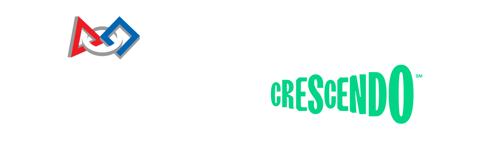

Nosso time participa anualmente da FIRST Robotics Competition, a maior competição de robótica educacional a nível de ensino médio do mundo! Ela visa inspirar jovens a seguirem carreiras nas áreas da ciência, tecnologia, engenharia, artes e matemática. Mas não só isso, ela também é uma competição que promove valores e tem como slogan “Mais do que Robôs”.